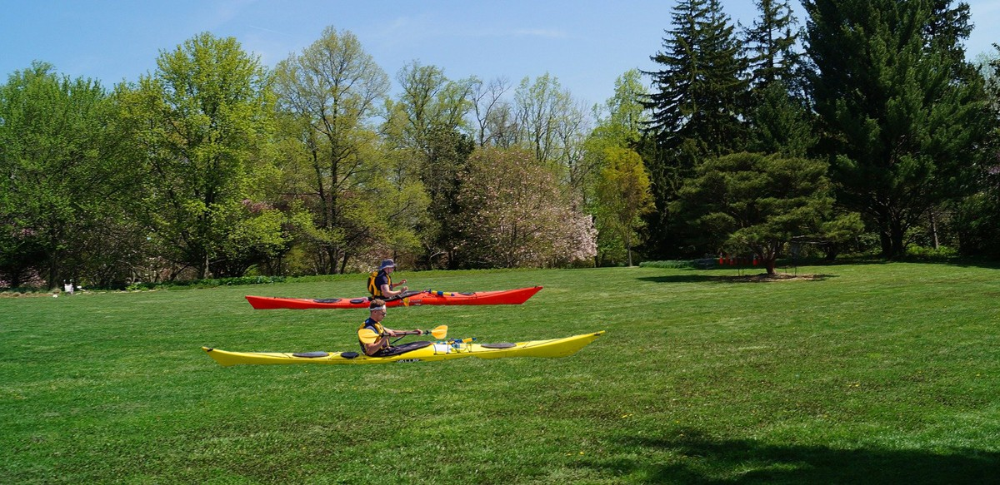

Dans un entretien accordé à la chaîne Canal Plus, le joueur brésilien évoque sa relation avec la France et ne cache pas sa déception de voir que les fans français s’adressent encore à lui dans la langue de Molière.
Pour illustrer son propos, Neymar évoque le public brésilien, beaucoup plus ouvert et accueillant que le public français selon lui . « Là-bas, mes parents, ma famille, les supporters brésiliens mais aussi tous mes compatriotes ont fait l’effort d’apprendre ma langue pour pouvoir communiquer avec moi » lance-t-il au journaliste, expliquant ne pas comprendre que les Français refusent de se mettre au diapason pour communiquer avec lui.
Le joueur du PSG parle aussi d’intégration, qui doit passer selon lui par l’apprentissage de la langue mais aussi des coutumes. « Si les Français avaient fait l’effort d’apprendre à parler portugais, mon intégration aurait été beaucoup plus rapide en France » explique le joueur qui déplore également avec une pointe de déception le manque d’enthousiasme des autorités françaises à rendre férié le jour de son anniversaire.
Après deux manches extrêmement serrées, les 24 concurrents engagés dans l’épreuve de kayak sur gazon n’ont pas réussi à se départager et se sont finalement vus attribuer la première place ex-æquo.
L’émotion des 24 athlètes, parmi lesquels on compte le parisien Joris Declaveaux, était palpable au moment de monter sur le podium pour recevoir la médaille d’or. « Même si je n’ai toujours pas réussi à avancer d’un centimètre, c’est l’aboutissement de plus de cinq ans de travail acharné » a-t-il déclaré au micro de Nelson Monfort après la cérémonie protocolaire.
Pourtant, sur le papier, la tâche s’annonçait plus que difficile, le français se retrouvant suite à un tirage au sort défavorable, dans la même série que pas moins de huit champions du monde en titre de la discipline. Mais à l’image de ses adversaires, le français a su déjouer tous les pièges et tirer son épingle du jeu en sortant premier ex-æquo de sa série. Une première place directement qualificative pour la grande finale qu’est parvenue à atteindre l’intégralité des concurrents présents au début de la compétition.
LE POINTVIRGULE | ACTUALITÉ? |
MAGAZINE |
|
Consultez les articles de la rubrique Actualité, suivez les informations en temps réel et accédez à nos analyses de l’actualité. Climat : ce qu’il faut savoir Penser avec les Grecs La disparition de Delphine Jubillar Index des personnalités Index des journalistes du PointVirgule Le Point pour les déficients visuels |
Expérience Le Point
La boutique Abonnements Applications mobiles Nos partenaires Nous sommes OJD Les forums du PointVirgule |